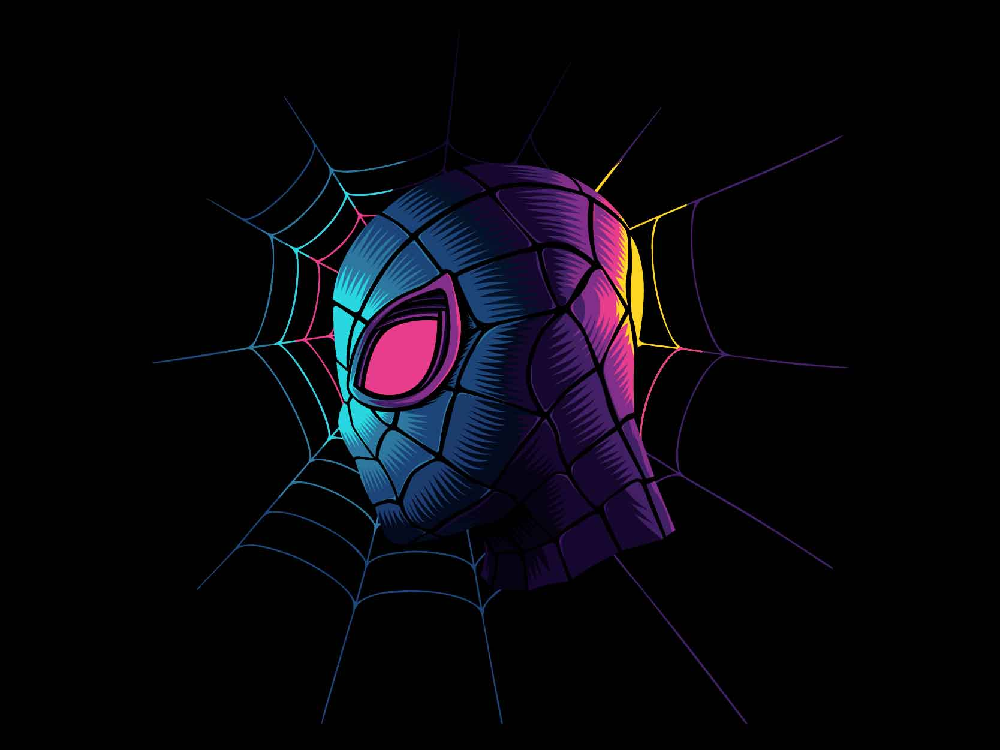
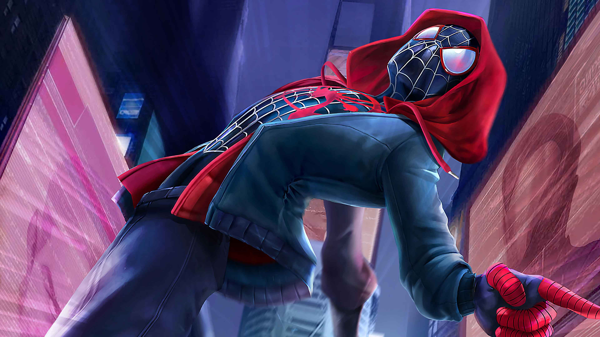

Miles Morales é um garoto de origem latino-africana morador do bairro do Brooklyn, em Nova York. Desde de cedo na sua vida, Miles teve que lidar com bullying, a pobreza e a criminalidade de sua vizinhança. A primeira vez que somos apresentados a esse personagem nos quadrinhos, vemos que ele foi sorteado para frequentar uma boa escola, onde Miles teria uma oportunidade para escapar a realidade que vivia.
Antes de avançarmos mais na história desse personagem, é preciso esclarecer um ponto importante. Miles Morales foi criado originalmente como um personagem do Universo Ultimate da Marvel. Ou seja, Miles não pertencia ao universo principal da Marvel. Nessa realidade Ultimate, Peter Parker já era o Homem-Aranha há anos, e havia criado uma ótima reputação como um super-herói. Então, algo acontece.
Certo dia, apesar de seus pais constantemente avisarem para não fazer, Miles foi visitar seu tio Aaron Davis para contar que havia sido selecionado para uma boa escola. O motivo de seus pais serem tão contra o contato dos dois é porque Aaron é um criminoso. Mais especificamente, Aaron Davis é o ladrão conhecido pelo nome de Gatuno.
Coincidentemente, na noite anterior à visita de
Miles, Aaron havia roubado um dos cofres da
Oscorp. Sem que Gatuno percebesse, uma aranha geneticamente modificada que havia escapado
dos
laboratórios da Oscorp entrou em sua bolsa durante o roubo.
Já na casa de seu tio, Miles foi picado pela aranha que havia saído de dentro da bolsa de Aaron. Pouco tempo depois, Miles descobre que havia ganhado superpoderes, como camuflagem e a habilidade de subir nas paredes. Ao contar para seu melhor amigo, Ganke Lee, ambos concluíram que ele tinha os poderes do Homem-Aranha. Contudo, Miles só queria ser normal e não gostou disso. Por fim, deixou o heroísmo para o Homem-Aranha que já existia.
Meses depois que Miles havia ganhado seus super-poderes, o
Homem-Aranha entrou em um
combate decisivo contra o Duende Verde. O vilão estava ameaçando as vidas de Tia May, Gwen Stacy e Mary
Jane Wattson como um modo de alcançar Peter Parker. No fim, o Duende Verde foi derrotado, porém Peter
Parker morreu no processo. Esse foi o fim do Homem-Aranha.
A morte do herói, atraiu a atenção de muitos cidadãos que estavam ao redor. Entre eles estava Miles
Morales, que ficou arrasado. Sentia-se culpado, pois tinha os poderes que poderiam ter ajudado o
Homem-Aranha, mas se recusava a usá-los. Após o funeral de Peter e uma conversa com Gwen, Miles decide
seguir a filosofia do antigo Homem-Aranha: “Com grandes poderes vêm grandes
responsabilidades.”
De certa forma, Peter Parker foi o Tio Ben de Miles Morales.
Assim como os poderes de Peter Parker, as habilidades de Miles Morales vieram a partir de uma picada de aranha geneticamente modificada. Contudo, Miles recebeu algumas habilidade s que que Peter não possui.
Todas as suas capacidades físicas foram ampliadas ao nível de um super-humano. Miles possui força, velocidade, resistência, vigor, reflexos, e equilíbrio muito mais desenvolvidos que uma pessoa comum. Sua força, por exemplo, o possibilita erguer objetos de até 10 toneladas.
Seu corpo também possui uma taxa de regeneração muito mais rápida que a de uma pessoa normal. Miles é capaz de se recuperar de ferimentos em uma questão de apenas algumas horas, dependendo da gravidade da ferida.
A outra habilidade que única de Miles. É a habilidade que possui de mesclar seu corpo (juntamente de suas roupas) com o ambiente ao seu redor, ficando quase invisível.
Trata-se de uma habilidade extrassensorial que possibilita Miles ter um certo nível de consciência do ambiente ao seu redor e dos perigos que podem ameaçá-lo. O sentido-aranha, em conjunto com seus reflexos, permitem que Miles se esquive instintivamente de ataques inimigos, mesmo que estejam fora de seu campo de visão.
Um dos poderes únicos de Miles Morales. Miles consegue gerar um choque elétrico com a ponta de seus dedos, que usa normalmente para atordoar seus inimigos. A força dessa carga elétrica pode variar, sendo que cargas muito altas consomem o vigor de Miles. Esse poder possui uma eficácia ainda maior contra inimigos que passaram por algum tipo de modificação genéticas.
Através de suas mãos e pés, Miles consegue se aderir e escalar quase qualquer tipo de superfície.